Multiview Composition and Information Density
Readings: 1, 2 (optional), 3 (optional)
Items marked with \(^\dagger\) will not be tested on exams.
Concepts
It might seem like we’re limited with the total number of variables we can display at a time. While there are many types of encodings (position, color, size, …) we could in theory use, only a few them are very effective, and they can interfere with one another.
There are several ways around this. One of the most effective is to combine multiple views, either in parallel (small multiples) or which complement one another (multiform views). We’ll study why this works and the design considerations that make the results more readable.
Small Multiples
Our eyes are good at making sense of many small plots, as long as there is shared structure across the plots. We can quickly scan the collection and spot meaningful relationships. Formally, a small multiples plot first partitions the data into disjoint subsets and then applies the same encoding to each of the subsets. Each subset is associated with a small panel within the larger plot.
Here’s a historical example, by Francis Walker for the 1870 US Census. Note the simplicity of each component, which keeps the overall display readable.
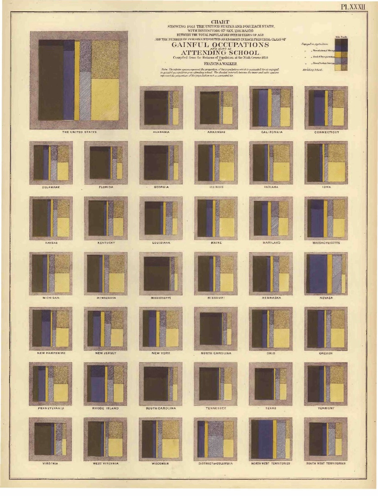
These are a useful alternative to interactivity. When we cover interactive visualization, we will show how to use user-controlled inputs to filter down to different subsets and update the visual display. This serves a similar purpose as small multiples and takes up less space than small multiple plots. However, interactivity has the downside of creating a large memory burden (the same problem applies to animation). We have remember what the previous subset looked like, while with small multiples we can make the comparison directly. Here’s a famous historical example to highlight the benefit of small multiples in reducing memory burden, from Edwaerd Muybridge’s The Horse in Motion.

Both ggplot and mosaic support faceted plots. These are a special case of small multiples where a single type of plot is split into many parallel panels, each containing a different subset of the data. We’ll see code for this below.
The analogous mosaic plot:
Two important decisions we need to make in any faceted plot are,
- Should the views share the same axes? Sharing axes makes panels directly comparable, but if the data ranges are very different, it might be difficult to read differences within some of the panels.
- How should the panels be arranged? If the subsets are determined by a categorical variable, we could always use sort alphabetically to help with direct lookups. Alternatively, we could sort by some property of the data within each panel (e.g., averages or correlations).
The basic downside of this approach is that it takes up a lot of space, since we are repeating an base visualization many times. When there are many subsets, we either have to shrink the individual panels (which can become illegible) or make the visualization very large (which we may not want to do if it’s not the most important message to communicate).
Ridge plots are a form of small multiples plot that are well suited to displaying multiple parallel time series or densities. The plot shows traffic over the course of a week in 38 German cities (source data).
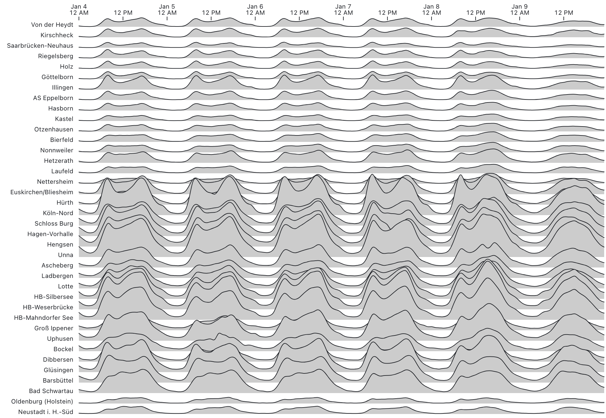
An example ridge plot for the gapminder dataset is shown below. Since the densities can overlap, we can see many groups in less space than a faceted visualization.
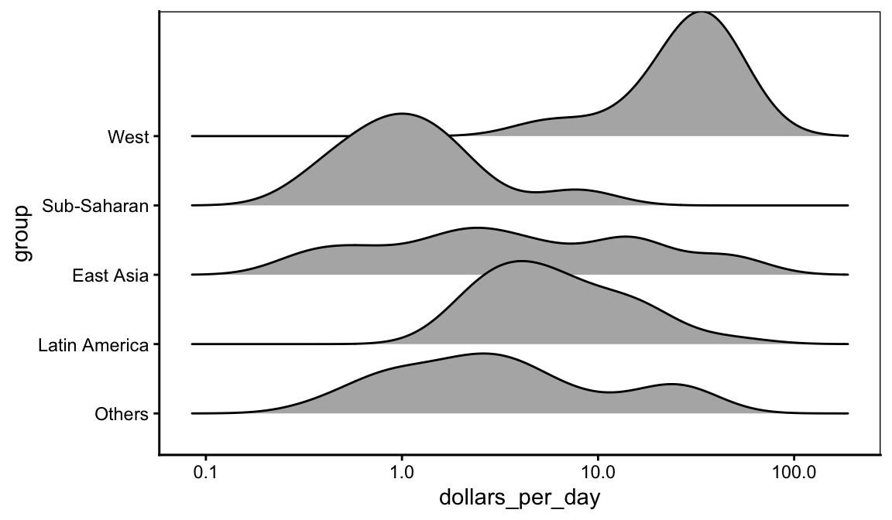
We could instead plot the raw data using
geom_point. The result isn’t as satisfying, because, while the shape of the ridges popped out immediately in the original plot, we have to invest a bit more effort to find the regions of higher density in the raw data plot. Also, when there are many samples, we risk “overplotting,” where so many points overlap one another that finer differences in point density become impossible to see.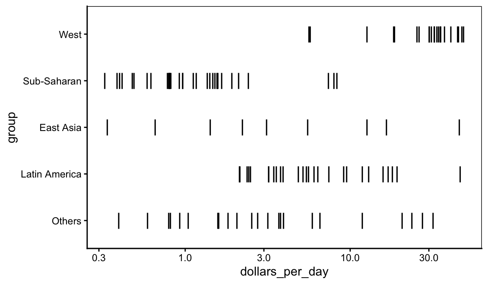
A nice compromise is to include both the raw positions and the smoothed densities.
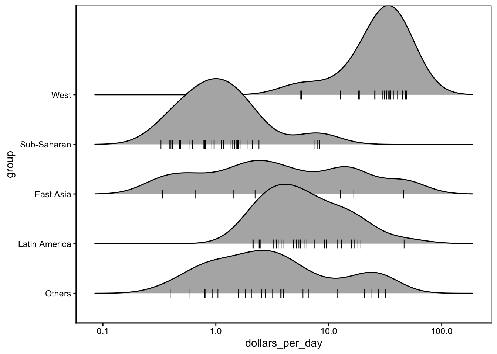
Another special case of small multiples are sparklines. These are small, simplified line plots that are integrated directly into text.
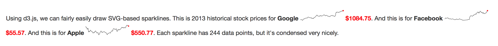
They show trends without any axes or labels, which keeps them from feeling cluttered. Selective annotation can be used highlight a few points of interest.
Besides direct integration into text, it’s common to see sparklines combined in tables. Even though there are many lines, the fact that they all share the same encoding means our eyes quickly recognize groupings and exceptions.
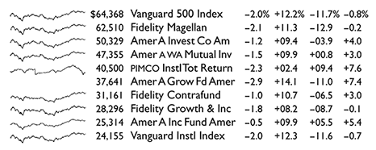
Multiform Plots
Small multiples are useful whenever we want different subsets (rows) of the data to appear in different parts of the plot. What if we want to compare different features (columns), or work with several datasets? An alternative is to use multiform plots. The idea is to construct plots separately and then combine them only at the very end. This is the opposite of small multiples: Instead of applying the same encoding to different data subsets, we show different encodings of the same data.
The main advantage of multiform plots is that individual panels can be tailored to specific visual comparisons, but relationships across panels can also be studied. For example, the plot below shows change in the total number and composition of undergraduate majors over the last few decades. In principle, the same information could be communicated using a stacked area plot. However, comparing the percentages for 1970 and 2015 is much more straightforward using a line plot, and we can still see changes in the overall number of degrees using the area plot.
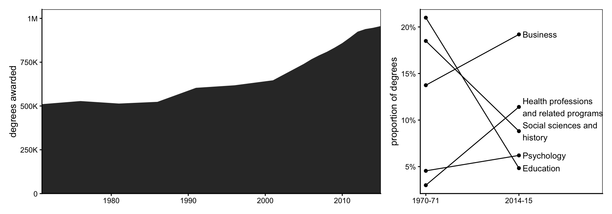
For reference, here is a non-multiform display of the same information.
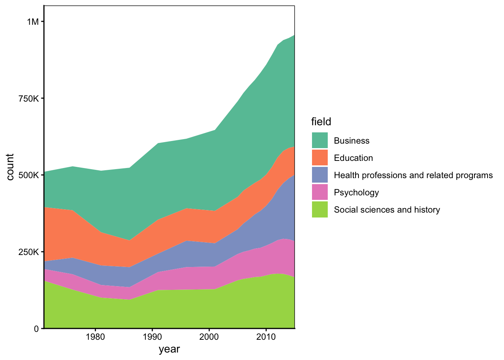
There are a few considerations that can substantially improve the quality of a multiform plot,
- Consistent visual encodings for shared variables
- Clear, but unobtrusive annotation
- Proper alignment in figure baselines
We will discuss each point separately.
The figures below are multiform plots of a dataset of athlete physiology. They are very similar, but the second is better because it enforces a more strict consistency in encodings across panels. Specifically, the male / female variable is (1) encoded using the same color scheme across all panels and (2) ordered so that female repeatedly appears on the right of male.
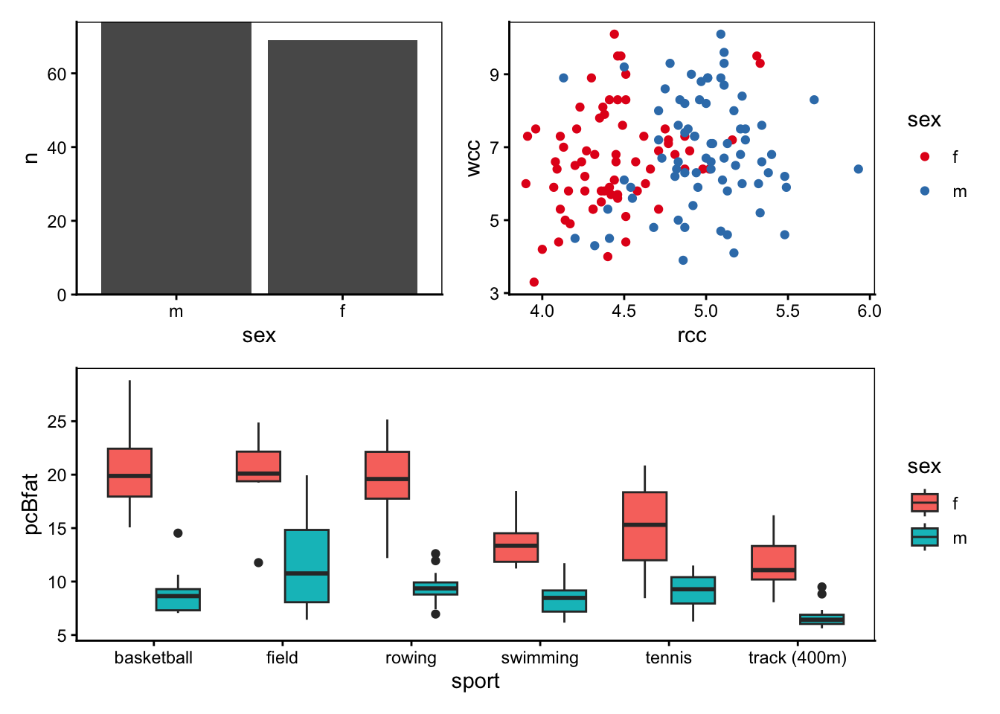
The improved, visually consistent approach is given below.
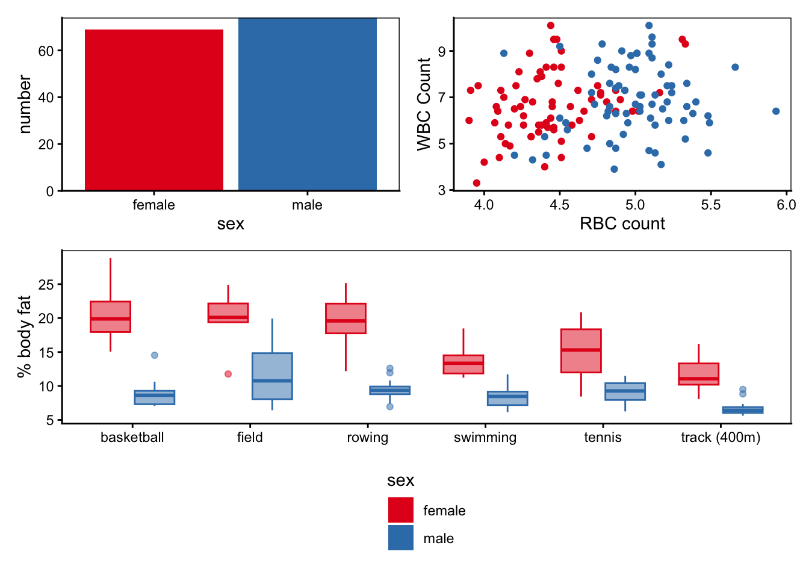
Effective annotation can be used to refer to different subpanels of the data without drawing too much attention to itself. Labels should be visible but subtle – not too large, similar fonts as the figures, and logically ordered ((a) on top left). A nice heuristic is to think of these annotations like page numbers. They are useful for making references, but aren’t something that is actively read.
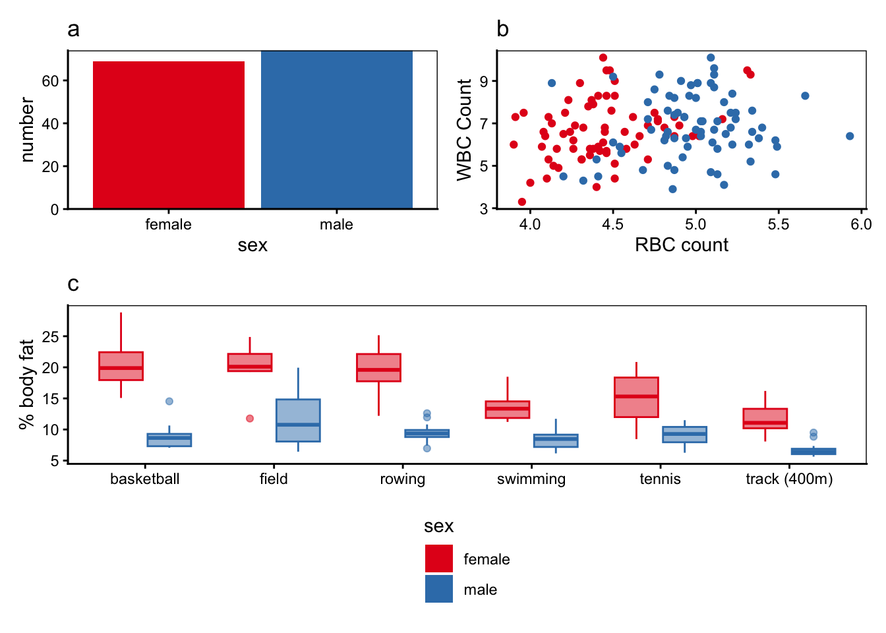
For alignment, figure baselines / borders should be consistent. Misalignment can be distracting. This is a problem when multiform plots are made from manually (e.g., in a illustrator app). If we follow the programmatic approach discussed below, we won’t have this issue.

Information Density
Small multiples (especially sparklines) are most legible when they trim away extraneous marks, allowing us to focus on the data itself. This principle applies to other figures and has been called information density or the data-to-ink ratio. We can increase information density by trimming away grid lines, reducing the number of digits in axes labels, removing borders from legends, etc. In the plots below, the second version has higher information density.
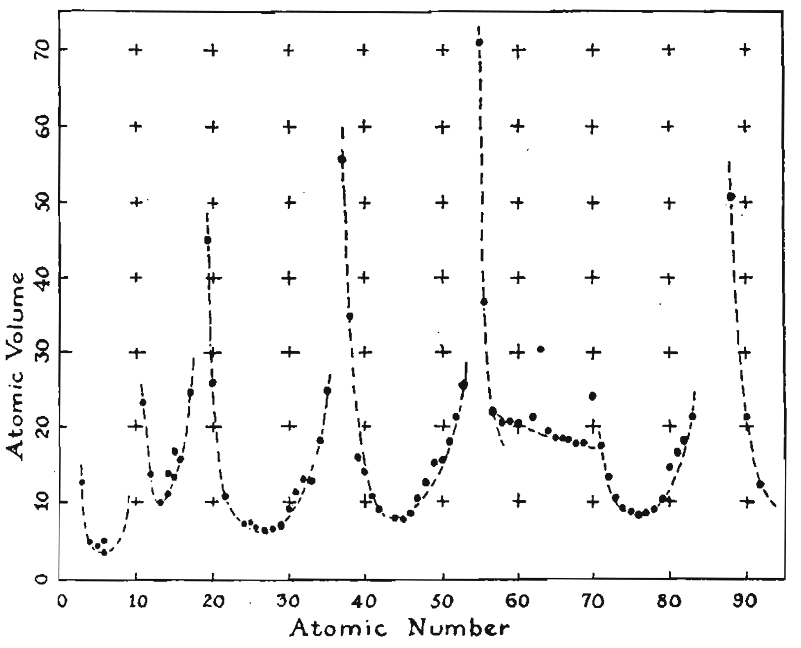
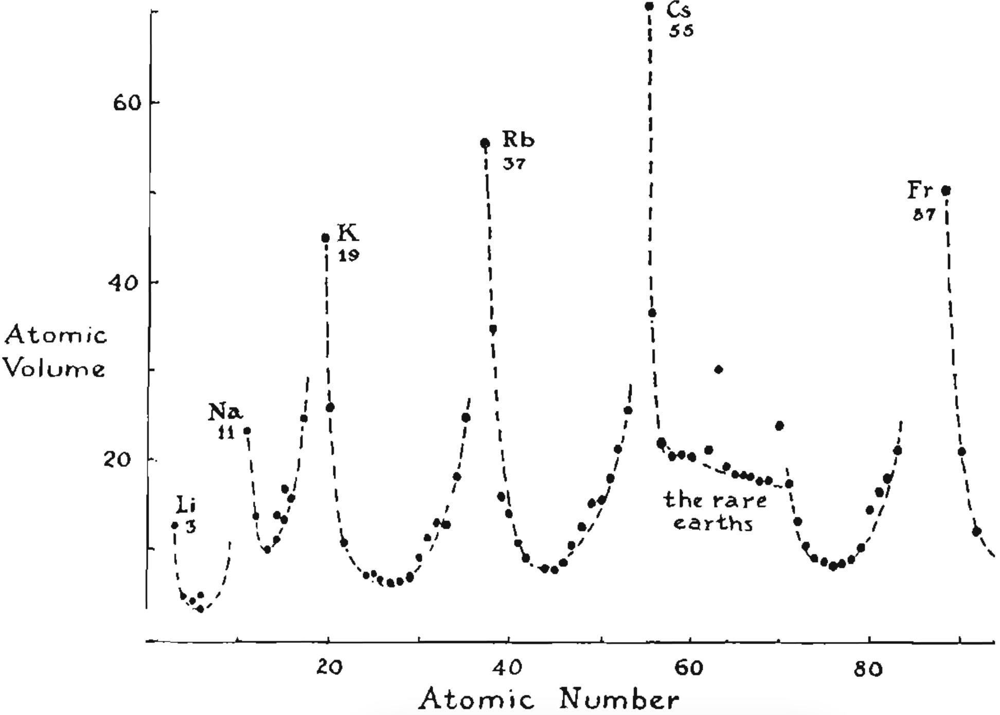
A startling example is this visualization redesign related to the Space Shuttle Challenger disaster, which was caused by damage to the shuttle’s O-rings during unusually cold weather. Here is a version from the official investigation into the disaster.
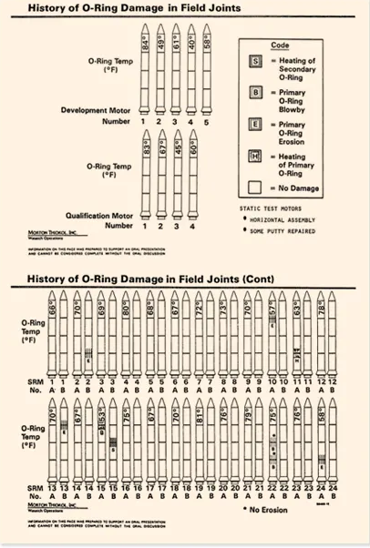
Edward Tufte redesigned the figure to increase the data-to-ink ratio,
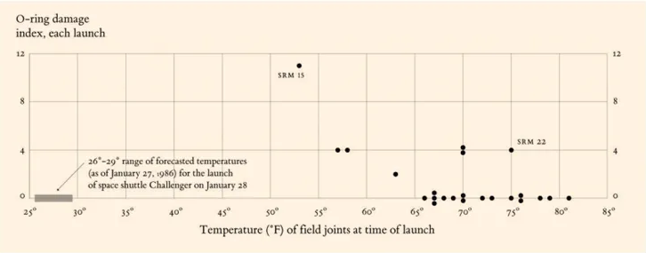
which makes the relationship between temperature and O-ring damage much clearer. Tufte argues that had these clearer visualization designs been part of standard practice at NASA, then the disaster might have been prevented. We should take this with a grain of salt, though. (Martin 2015) point out that the safety of the launch could be affected by many components of the shuttle, each of which could be damaged by environmental or engineering factors. We only know to plot temperature against O-ring damage after the disaster already happened.
One corrollary is that we should avoid “premature summarization.” By reducing data to aggregate statistics, we reduce the amount of information available to the viewer. For example, instead of showing “dynamite plot”,
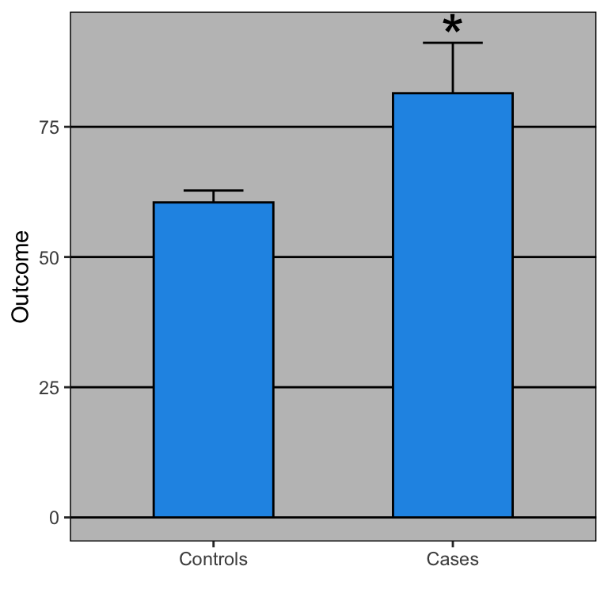
it is more informative to show the points,
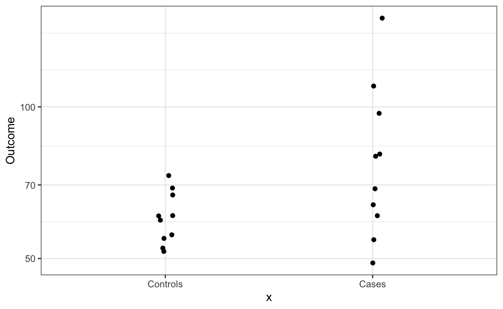
If summaries make comparison easier, then we could alternatively superimpose them over the raw data (Irizarry 2019) using a boxplot or ridgeplot.
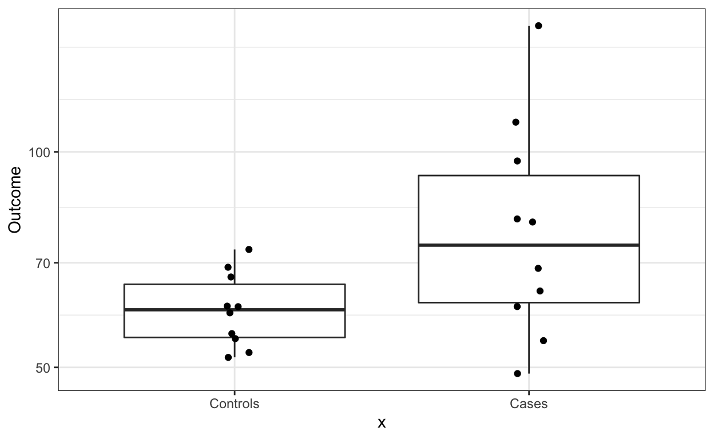
Implementation
ggplot2
There are two ggplot2 layers for creating faceted plots. The first,
facet_griduses formula syntax to split the data into subsets, each of which is associated with a panel. For example,~ islandsplits the three islands into columns.ggplot(penguins, aes(bill_length_mm, bill_depth_mm, color = species)) + geom_point() + facet_grid(~island)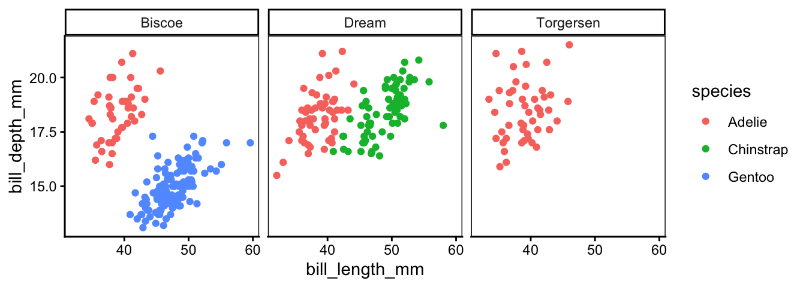
Placing the variable before the
~splits across rows.ggplot(penguins, aes(bill_length_mm, bill_depth_mm, color = species)) + geom_point() + facet_grid(island ~ .)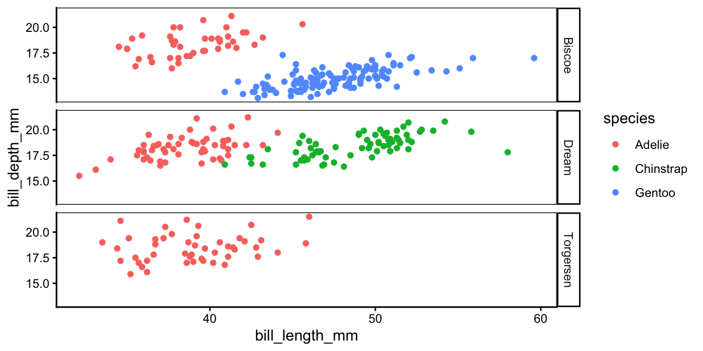
We can facet across multiple variables. Variables before
~are split across rows, those afterwards are split across columns.ggplot(penguins, aes(bill_length_mm, bill_depth_mm, color = species)) + geom_point() + facet_grid(sex ~ island)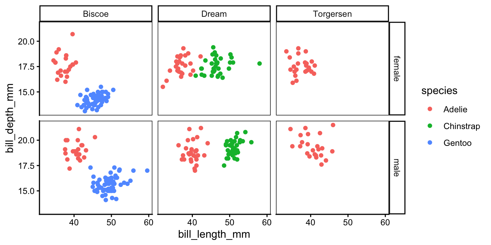
Exercise: How might we facet with a continuous variable? Hint: Consider
cut().Exercise: What about more complicated formulas? Try
sex + island ~ yearIf we have many very many panels and don’t want them all in one row, we can use
facet_wrap. It sets a maximum number of panels per row and wraps extra panels onto new rows.ggplot(penguins, aes(bill_length_mm, bill_depth_mm, color = species)) + geom_point() + facet_wrap(~island)
If we have subgroups with quite different \(x\) or \(y\)-axis ranges, we can use the scales argument to
facet_gridorfacet_wrap. The options arefree_x,free_y, orfree, which allow the \(x\), \(y\), or both axes scales to differ across panels. The code below illustrates the idea for the penguins data, but in this case it seems better to keep the scales fixed.ggplot(penguins, aes(bill_length_mm, bill_depth_mm, color = species)) + geom_point() + facet_wrap(~island, scales = "free")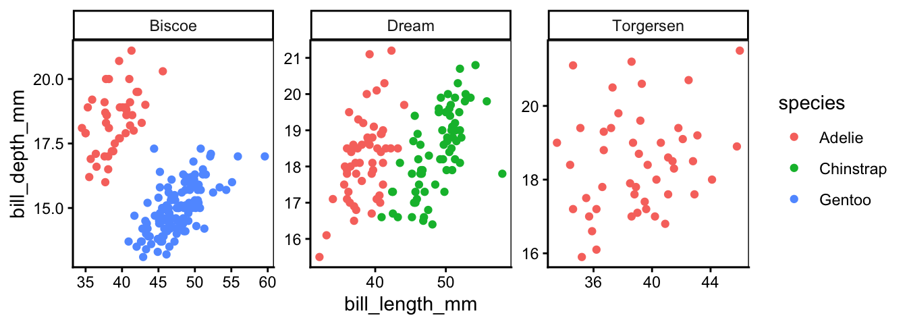
By default, the panels are sorted alphabetically. But to increase information density, it helps to instead sort by a property of the data. We can use
reorderwithin our formula to sort the categories by a variable of interest.ggplot(penguins, aes(bill_length_mm, bill_depth_mm, color = species)) + geom_point() + facet_wrap(~ reorder(island, bill_length_mm))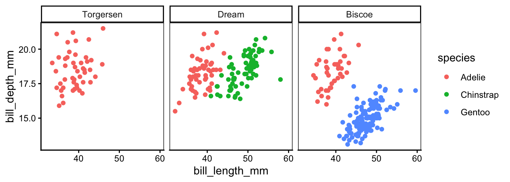
Exercise: By default
reordersorts using the mean of the second argument within each group of the first. It’s possible to sort by other properties, like median or variance. Find documentation to see how this is done.
ggridges
The ggridges package creates ridge plots. If we want to organize many densities according to a ridge plot, we can use
geom_density_ridges.ggplot(penguins, aes(body_mass_g, species, fill = species)) + geom_density_ridges()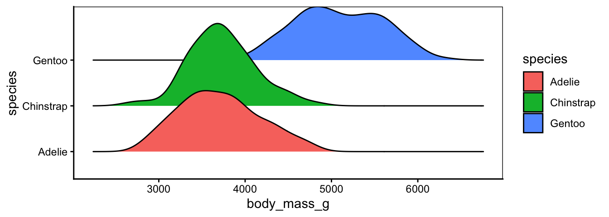
Sometimes we want a ridge plot and already have the height values for the ridges computed in advance. In this case, we can use
geom_ridgelinewith a height encoding.tibble(x = seq(0, 1, length.out = 10)) |> mutate( `y = x` = x, `y = x^2` = x^2 ) |> pivot_longer(-x, names_to = "f", values_to = "y") |> ggplot(aes(x, f, height = y)) + geom_ridgeline()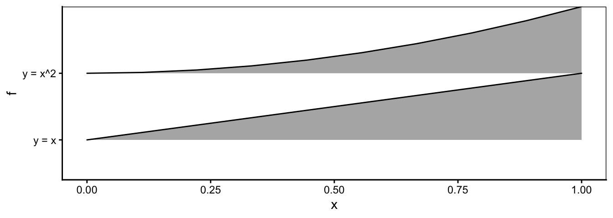
patchwork
patchworkcan be used to merge ggplot2 components into multiform plots. It usesa + bto place ggplot objectsaandbside-by-side and/to place them vertically. Theplot_layoutcommand can be used to customize the theme of the overall plot, for example,guides = "collect"gathers all the legend into one place. We can also use thewidthsandheightsargument of this function to control the relative sizes of the components.p1 <- ggplot(penguins, aes(bill_length_mm, bill_depth_mm, color = species)) + geom_point() p2 <- ggplot(penguins, aes(body_mass_g, fill = species)) + geom_histogram(bins = 30) + scale_fill_discrete(guide = "none") p1 + p2 + plot_layout(guides = "collect")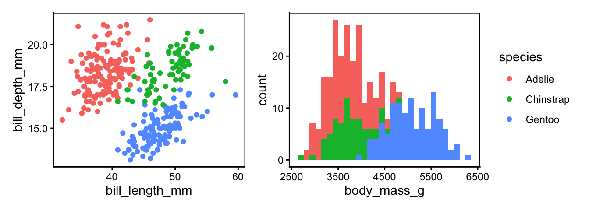
Exercise: We removed the color legend for the histogram
p2usingguide = "none"in thescale_fill_discretelayer. Why? What would have happened to the plot if we removed this layer?We can use
+and/like algebraic symbols to compose more complex layouts. For example, below we place two plots side-by-side and both of those on top of a third.p3 <- ggplot(penguins, aes(flipper_length_mm, body_mass_g, color = species)) + geom_point() (p1 + p2) / p3 + plot_layout(guides = "collect")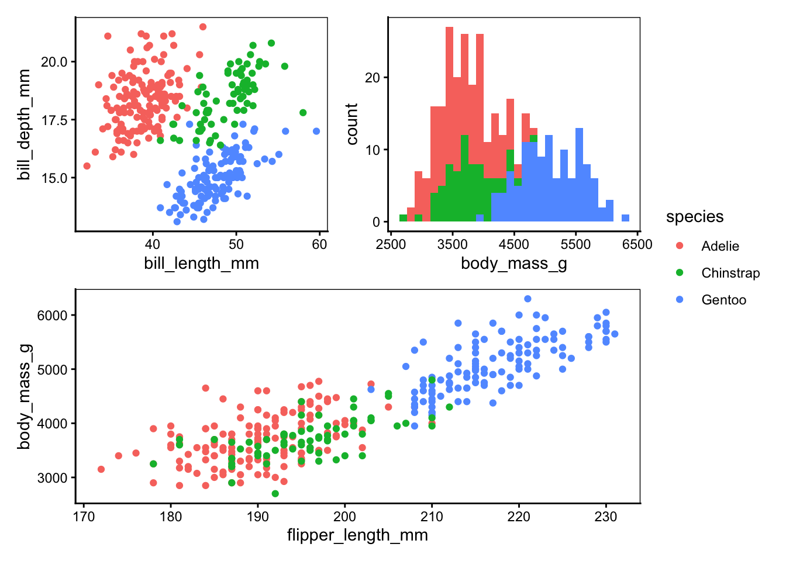
vgplot faceting and concat
- Mosaic can also be used to created faceted and and multiform plots. Let’s first read in the penguins dataset. We use a version that was saved to the
datasubdirectory in advance.
path = (p) => new URL(`data/${p}`, document.baseURI).href
vg = {
const vg = await import("https://cdn.jsdelivr.net/npm/@uwdata/vgplot@0.19.0/+esm");
const wasm = await vg.wasmConnector();
vg.coordinator().databaseConnector(wasm);
await vg.coordinator().exec([
vg.loadCSV("penguins", path("penguins.csv"), { header: true })
]);
return vg;
}- Mosaic doesn’t use a separate layer to define facets. Instead, it treats faceting as an encoding channel. The
fxchannel splits the plot into horizontally adjacent panels according to the unique levels of the variable it encodes.fydoes the analogous vertical split.
vg.plot(
vg.dot(
vg.from("penguins"),
{
x: "bill_length_mm", y: "bill_depth_mm",
fill: "species", fx: "island"
}
),
vg.colorLegend({label: "species"}),
vg.width(650),
vg.height(250)
);- For multiform plots, we can use
hconcatandvconcat. These are analogous to patchwork’s+and/. First, let’s create the two mosaic plots on their own.
scatterPlot = vg.plot(
vg.dot(
vg.from("penguins"),
{x: "bill_length_mm", y: "bill_depth_mm", fill: "species"}
),
vg.width(300),
vg.height(250)
);barChart = vg.plot(
vg.rectY(
vg.from("penguins"),
{x: vg.bin("body_mass_g"), y: vg.count(), fill: "species"}
),
vg.width(300),
vg.height(250)
);Next we combine them horizontally using hconcat.
vg.hconcat(scatterPlot, barChart);Objectives
By the end of this week, you should be able to,
- Compare and contrast situations when we should use faceting vs. multiform visualizations.
- Evaluate the advantages of disadvantages of small multiples visualization compared to alternatives like animation and interactivity.
- Critique and suggest improvements to a visualization from the information density perspective.
- Describe best practices for ensuring readability of multiform plots.
- Given examples of ggplot2 faceting and mosaic faceting code code, describe what each element means and what the output would look like.
- Given examples of patchwork and mosaic concatenation code, describe what the syntax means and what the output would look like.
References
Irizarry, Rafael. 2019. Simply Statistics: Open Letter to Journal Editors: Dynamite Plots Must Die — Simplystatistics.org. Https://simplystatistics.org/posts/2019-02-21-dynamite-plots-must-die/.
Martin, Fernanda &. 2015. Design and Redesign — Hint_fm. Https://medium.com/@hint_fm/design-and-redesign-4ab77206cf9.